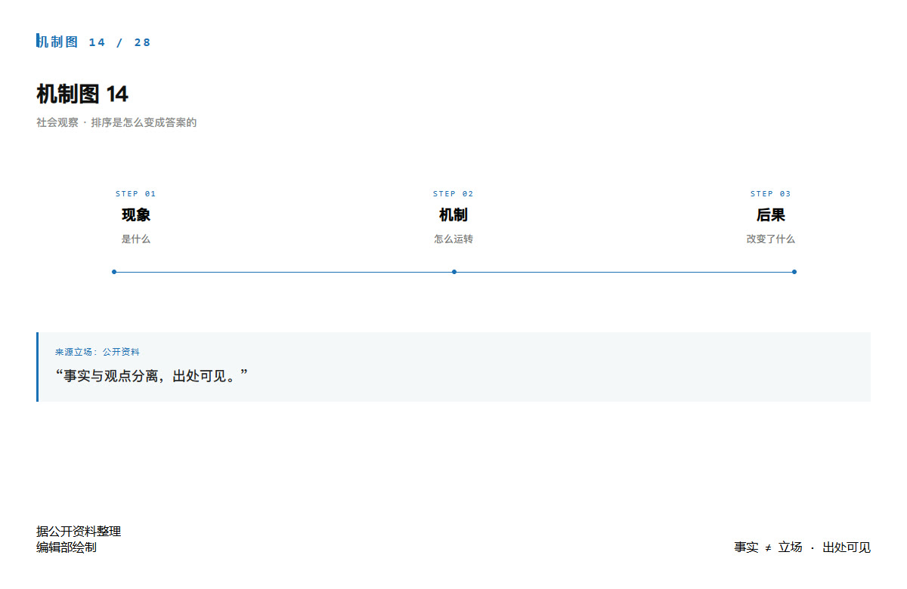

搜到的，就被当成真的
社会观察 · 排序是怎么变成答案的
你带着一个问题打开搜索框，打了几个字。跳出来的前几条，你点开两条，看完觉得心里有数了。你没想过的是：这几条为什么排在最前面，它们是被按什么顺序摆上去的。
下面用到的两个比例，来自公开的行业分析口径，平台没有逐条确认；另一组用户结构数字是描述性的，只说明谁在场上，不说明谁对谁错。这里写的是机制，不写恶，也不碰具体个案。
你以为你在查证。其实你拿到的，是一份按互动分数排好的清单。看的人多了，它就从「清单」变成「答案」，再变成你嘴里的「大家都说」。
纯推荐流的平台只管把内容推到你眼前，看完就翻篇。小红书多了一条腿：搜索。据行业分析口径，它的站内月均搜索渗透率约 70%，搜索流量在整体分发里的权重约 40%。
这个结构改的不是功能，是心理默认。你带着问题来，搜完拿到一个答案。搜索框天然带着一种权威感——它是我主动找的，不是别人塞给我的。于是「搜到的即真实的」悄悄成立。
推荐负责让你看见，搜索负责让你相信。两条腿合起来，一次曝光就不只是一次曝光，它会沉淀成你下次遇到同类问题时的第一反应。
📌 两个值得记住的数字
月均搜索渗透率约 70%，搜索在分发里的权重约 40%。这不是两条独立功能，是一套闭环：推荐让你看见，搜索让你相信。
用户带着真问题进来：谈崩了怎么办，被冤枉了怎么解释，一段关系该不该继续。这些问题都没有标准答案，但搜索框会给出一份按分数排好的答案。
排在前面的内容，互动高、姿态干净。用户读两条，觉得「原来是这样」。他未必知道这份答案的排序依据：不是更接近事实，是更能引发动作。
上一代机制只是让你看见大声的；这一代让大声的看起来像标准答案。从「被看见」到「被默认」，全程不需要谁的主观恶意，只需要每个人按规则行动。
对一种心理默认的概括
「搜到的，即真实的。」
这是对心理默认的概括，不是事实判断。排序依据来自公开口径，可以被追问、被核对。

▲ 从推荐到搜索：一条叙事怎样被固化为答案（编辑部绘制）
还有一组数字常被拿来用：平台用户中女性约占 71.98%，18 至 24 岁约占 43.8%，一线与新一线城市合计约占 66.36%。这些是行业分析口径下的描述性数据。
它们只描述「谁在场上」，不推论「谁在作恶」。用户结构会影响一个场域里的议题偏好和话语风格，却不决定道德。把性别比例当成指控依据，无论指向哪一边，都越过了这里能说的边界。
写机制不写恶，不是替谁开脱，是守住观察的位置。机制是中性运转的，占位才是不中性的。谁先完成叙事定性，谁就更可能借到这套系统的力。
能谈的方向很小，但具体：搜索结果页能不能标一句「本页按互动热度排序」。这句话不改变排序，只改变读法——让用户知道眼前是一份清单，不是一份判决。
从信仰退回参考，不需要谁承认错误，只需要多一行说明。你搜到的依然可能是偏的，但你知道它是怎么排出来的，这份知道本身，就已经够了。
✍️ 你有没有搜过一个词，然后就信了？
后来有没有发现，换一种问法，答案完全相反？评论区说说。觉得有用，点个赞、点个「在看」。
下一篇：清得掉假，清不掉倾斜——治理数据的两面。
参考
搜索渗透率约 70%、搜索权重约 40%，据公开行业分析口径，描述性数据，非精确统计，平台未逐项确认。
用户结构（女性约 71.98% / 18 至 24 岁约 43.8% / 一线与新一线约 66.36%），据公开行业分析口径，只描述「谁在场上」，非指控依据。
社会观察，不站任何性别立场。只写分发机制，不写「恶」；用户结构只描述场域，不推论道德。事实据公开来源，未证实指控不转述、不评价。拆解规则是为了理解，不是行动指南。